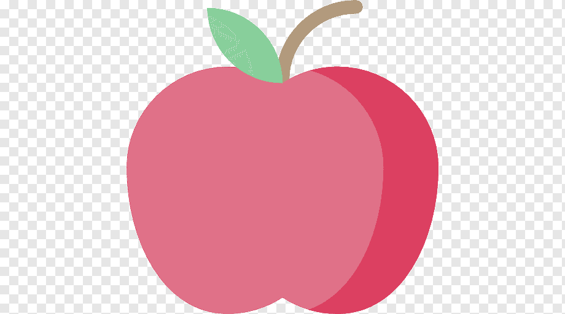

Como se previnir?

Pratique atividades físicas
Manter o corpo ativo ajuda a reduzir o risco de desenvolver câncer de mama.

Alimente-se bem
Tenha uma alimentação equilibrada, com frutas, verduras e legumes.

Realize exames regularmente
Procure uma unidade de saúde para receber orientações sobre os exames recomendados.